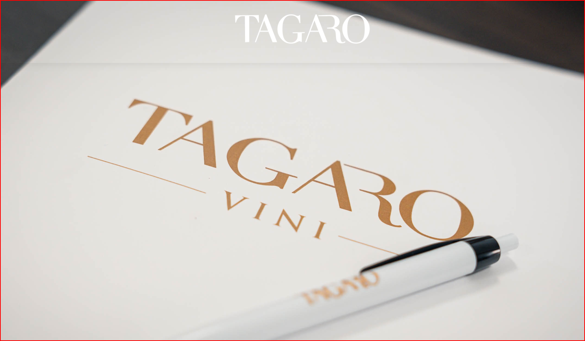

Contesto
Presento il contesto aziendale in modo essenziale, credibile e utile per una prima valutazione.
Castel d'Ario (MN) · B2B Commercial Facilitation
Sales & Business Development Facilitator
Connecting Producers, Distributors and Growth Opportunities
Facilito relazioni commerciali B2B tra produttori, distributori, buyer e operatori professionali, creando le condizioni per un primo contatto chiaro, credibile e orientato al valore.
Il primo contesto operativo è Masseria Tagaro S.r.l., cantina di Locorotondo, in Puglia, con orientamento internazionale.
Trust / Role
Opero come facilitatore commerciale con un approccio riservato, strutturato e orientato alla qualità della relazione.
Il mio ruolo non è forzare una vendita, ma rendere più semplice l'incontro tra un'offerta credibile e interlocutori B2B realmente interessati: produttori, buyer, distributori, importatori, operatori Ho.Re.Ca., GDO e partner strategici.
Tagaro Business Context
Masseria Tagaro S.r.l. è una cantina attiva in un territorio vitivinicolo riconosciuto e con una chiara apertura verso mercati nazionali e internazionali.
Il progetto facilita la presentazione commerciale dell'azienda verso distributori, importatori, operatori Ho.Re.Ca., GDO, retail chain e partner orientati all'export.
Tra gli elementi distintivi da valorizzare nei materiali futuri rientra la Linea Gravità, riferimento di prodotto e packaging utile per comunicare identità, cura e riconoscibilità dell'offerta.
Visita www.tagaro.it
What I Do
Presento il contesto aziendale in modo essenziale, credibile e utile per una prima valutazione.
Facilito il contatto tra produttori e interlocutori commerciali qualificati.
Indirizzo buyer, distributori, importatori, Ho.Re.Ca. e GDO verso le risorse più rilevanti.
Accompagno il passaggio dal primo interesse a una conversazione diretta e verificabile.
Who I Work With
Il contatto ideale è un interlocutore qualificato, con un interesse reale, un contesto commerciale chiaro e disponibilità a una conversazione professionale.
Una presentazione sintetica del contesto Tagaro, pensata per agevolare una prima valutazione professionale.
Video Presentation Area
La presentazione video servirà a comprendere chi sono, quale ruolo svolgo, perché Masseria Tagaro può essere rilevante per interlocutori B2B e come avviare una conversazione commerciale qualificata.
Richiedi il videoResource Center
Presentazione commerciale e profilo aziendale.
Materiali per buyer, distributori, importatori, Ho.Re.Ca. e GDO.
Audio briefing breve per conoscere i principali elementi distintivi della proposta Tagaro anche nei momenti di tempo limitato.
My Method
Il metodo di lavoro è umano, documentato e supportato dall'intelligenza artificiale dove utile. Le decisioni strategiche restano umane.
Il principio guida è semplice: prima chiarezza di business, poi implementazione. Questo mantiene il progetto comprensibile, leggero e gestibile anche da un No-Code Developer.
Why Contact Me
Digital Business Card
La Digital Business Card raccoglierà ruolo, contatti, accesso alla presentazione video, risorse commerciali e link per richiedere una conversazione.
Contact / Appointment Section
Nel messaggio indica, se possibile, nome e azienda, ruolo, paese o mercato di riferimento, motivo del contatto e tipo di opportunità da discutere.